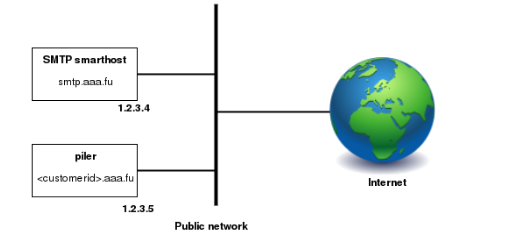
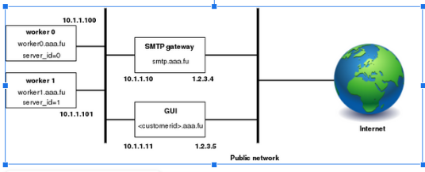

Installing piler enterprise edition#
This documentation applies to Piler enterprise edition 1.7.2
Revision #1
Publication date: Apr 20, 2023
Piler architecture overview#
Piler is flexible enough to support several configurations and layouts. Use one of the following layouts matching your environment.
Single node layout#

Figure 1. Single node installation
This is the simplest layout, when you have a single node running piler enterprise. It allows you to start small, and expand later as you grow.
Piler receives the emails directly, and archives them. The Piler node also runs the GUI. To restore the emails it uses the smtp smarthost (smtp.aaa.fu) to deliver emails to the users’ mailboxes.
The layout doesn’t include any firewalls, however you are encouraged to use a firewall, etc. to secure the Piler network.
Multiple nodes layout#

Figure 2. Multiple nodes layout
A typical installation may consist of two (or more) piler nodes (worker0 and worker1 in the example), an SMTP gateway, and a GUI node.
SMTP gateway: receives emails from customer SMTP servers, and acts as a smarthost forwarding the restored emails to the customer SMTP servers.
Worker nodes: runs the Piler daemon, archiving incoming emails. Requires a valid license.
GUI node: runs the Piler gui allowing the customers to view their emails. You may have more GUI nodes for larger installations, however in this case make sure that all GUI nodes use the same MySQL server. Doesn't require a license.
The emails from customer SMTP servers are received by the SMTP gateway which relays them to one of the worker nodes based on your preferences. The GUI node runs the piler gui allowing the customers to view their emails. The SMTP gateway should act as a smarthost and forward the restored emails to the customer SMTP servers.
The layout doesn’t include any firewalls, however you are encouraged to use a firewall, etc. to secure the piler network.
Platform requirements#
Piler enterprise supports Ubuntu 22.04 LTS (Jammy) x64 and Centos 9 x64
Hardware requirements#
Piler can be installed on physical hardware, virtual machine (VMware, etc), in the cloud (AWS, etc) or in a Docker container. Piler requires:
- 2+ GB memory
- 2+ (v)CPU
- 200+ GB disk space
Note that piler stores its data in /var/piler directory, mysql keeps the piler database in /var/lib/mysql by default. Make sure you have enough disk space under these directories. See the disk sizing guide below. The used filesystem is not a concern, however note that piler stores emails as encrypted and compressed files in the filesystem, so prepare for having millions of files in the directories under /var/piler/store and /var/piler/astore.
Piler also supports S3 compatible object stores, see section S3 object store for more details.
Disk sizing guide#
The disk size required for piler enterprise varies greatly on the usage patterns of your organization or customers. Here are a few numbers to give you a hint.
| Site | Messages | Manticore/sphinx | MySQL | Emails | Attachments |
|---|---|---|---|---|---|
| Demo site | ~500,000 | 0.93 GB | 1.4 GB | 2.4 GB | 0.21 GB |
| Personal archive | 76,000 | 0.2 GB | 0.67 GB | 0.64 GB | 1.7 GB |
| Another organization | ~9,000,000 | 25 GB | 23 GB | 200 GB | N/A |
The demo site has emails from mailing lists mostly and some spam, so it stores small emails, and few attachments only. If you expect such email patterns, then it’s worth formatting the partition with a smaller block size in mind.
The mentioned personal archive contains various size emails, more attachments.
The last organization has almost 9 million messages stored 200 GB on disk (=emails + deduplicated attachments)
Installing Piler (single node layout)#
The hardware and platform requirements are the same as the multiple nodes layout.
Prerequisites#
You have a working DNS entry for each node. We use the aaa.fu domain in the example (be sure to use your own real domain names!):
smtp.aaa.fu IN A 1.2.3.4
*.aaa.fu IN A 1.2.3.5
You may also have a wildcard certificate for your domain, eg. *.aaa.fu.
Installing piler#
curl -o noble.sh https://download.mailpiler.com/noble.sh
chmod +x noble.sh
Before running the installer (=noble.sh or centos9.sh for Redhat 9/Centos 9/Oracle Linux 9), be sure to revise the parameters, and fix them (especially MYSQL_ROOT_PASSWORD and MYSQL_PILER_PASSWORD) if necessary.
By default the installer sets up encryption at rest for mysql data.
For multitenant deployments be sure to set MULTITENANCY=1
Run the following command on your host:
PILER_HOSTNAME=archive.aaa.fu ./noble.sh
After the installation copy the licence for each worker node accordingly:
cp piler.lic /etc/piler/piler.lic
Make sure all the required services are running:
The installer creates systemd services for piler, piler-smtp, pilersearch and tika.
Add the worker node list to the site config:
echo '$config1["WORKER"] = array("archive.aaa.fu");' >> /etc/piler/config-site.php
Configuring the SMTP gateway is similar to the multiple node layout except you don’t have an internal network.
Installing Piler (multiple nodes layout)#
Prerequisites#
You have a working DNS entry for each node. We use the aaa.fu domain in the example (be sure to use your own domain names!):
smtp.aaa.fu IN A 1.2.3.4
smtp-int.aaa.fu IN A 10.1.1.10
gui-int.aaa.fu IN A 10.1.1.11
*.aaa.fu IN A 1.2.3.5
worker0.aaa.fu IN A 10.1.1.100
worker1.aaa.fu IN A 10.1.1.101
worker.aaa.fu IN MX 10 worker0.aaa.fu.
IN MX 10 worker1.aaa.fu.
You may also have a wildcard certificate for your domain, eg. *.aaa.fu, see the explanation below.
Be sure to have the curl package installed.
Installing the worker nodes#
curl -o noble.sh https://download.mailpiler.com/noble.sh
chmod +x noble.sh
Centos 9 users should get and use the centos9.sh script, and be sure to check out the Centos 9 specific notes section below.
curl -o centos9.sh https://download.mailpiler.com/centos9.sh
chmod +x centos9.sh
Before running the installer (noble.sh or centos9.sh), be sure to revise the parameters, and fix them (especially MYSQL_ROOT_PASSWORD, MYSQL_PILER_PASSWORD and AUTH_CODE) if necessary.
For multitenant deployments be sure to set MULTITENANCY=1
AUTH_CODE must be the same on all nodes, it acts as a password. Also MYSQL_PILER_PASSWORD should be the same on all Piler nodes.
By default the installer sets up encryption at rest for mysql data.
Run the following on worker0.aaa.fu:
PILER_HOSTNAME=worker0.aaa.fu MULTINODES=1 MASTER_NODE=gui-int.aaa.fu ./noble.sh
Run the following on worker1.aaa.fu:
PILER_HOSTNAME=worker1.aaa.fu MULTINODES=1 MASTER_NODE=gui-int.aaa.fu ./noble.sh
Notice that the PILER_HOSTNAME parameter is unique for each worker node.
After the installation copy the license for each worker node accordingly:
cp piler.lic /etc/piler/piler.lic
If you want the reach the GUI node via https, then fix /etc/piler/config-site.php on the worker, and set:
$config['API_PROTO'] = 'https://';
The installer adds systemd services for piler, piler-smtp, pilersearch and tika.
Note that each worker node requires a dedicated mysql server, so the installer script installs mysql daemon on each worker node.
Installing the GUI node#
curl -o noble.sh download.mailpiler.com/noble.sh
chmod +x noble.sh
Before running the installer (=noble.sh), be sure to revise the parameters, and fix them (especially MYSQL_ROOT_PASSWORD, MYSQL_PILER_PASSWORD and AUTH_CODE) if necessary. AUTH_CODE must be the same as on the worker nodes.
If you plan to install the smtp gateway, then set USE_SMTP_GATEWAY=1 in the installer script (by default it’s not set).
For multitenant deployments be sure to set MULTITENANCY=1
Run the following command:
PILER_HOSTNAME=gui-int.aaa.fu MULTINODES=1 PRIMARY_MASTER=1 NODE_TYPE=MASTER ./noble.sh
Add the worker node list to the site config:
echo '$config1["WORKER"] = array("worker0.aaa.fu", "worker1.aaa.fu");' >> /etc/piler/config-site.php
If you want the reach the worker node via https, then fix /etc/piler/config-site.php on the GUI node, and set:
$config['API_PROTO'] = 'https://';
Note that the GUI node does NOT need a license file.
Make sure that the worker nodes are able to access mysql server running on the GUI node!
Centos 9 specific notes#
On Centos 9 SELinux is enabled by default. This may interfere with the proper work of the GUI, so you need to either disable SELinux or configure it properly.
Centos 9 usually installs postfix, and makes it listen on the localhost. The piler-smtp daemon listens on all interfaces by default. Be sure to edit /etc/piler/piler.conf and fix listen_addr parameter to listen on the public address of the worker node.
Self signed certificate#
When using a self signed certificate, be sure to add the following to /etc/piler/config-site.php:
$config[‘ENABLE_SSL_VERIFY’] = 0;
Configuring the SMTP gateway#
The SMTP gateway should have two instances of postfix (you may choose another MTA of your choice). Instance #1 (the outer instance) runs on the outer interface (smtp.aaa.fu), and instance #2 (the inner instance) runs on the internal interface (smtp-int.aaa.fu).
Setting up the outer instance#
Postfix should accept only recipients for
myhostname = smtp-gw.aaa.fu
smtpd_recipient_restrictions = check_recipient_access proxy:mysql:/etc/postfix/customers.cf, reject
virtual_mailbox_domains = smtp.aaa.fu
virtual_alias_maps = proxy:mysql:/etc/postfix/virtual.cf
/etc/postfix/customers.cf:
hosts = gui-int.aaa.fu
user = piler
password = piler123
dbname = piler
query = SELECT 'OK' FROM customer_settings WHERE customer_address='%s' AND enabled=1;
/etc/postfix/virtual.cf:
hosts = gui-int.aaa.fu
user = piler
password = piler123
dbname = piler
query = SELECT CONCAT(customer_id, '@', worker) FROM customer_settings WHERE customer_address='%s' AND enabled=1;
The above config pulls the customers data from MySQL database. To make this work, be sure to fix the mysql configuration on the GUI node to allow access from the smtp gateway. Note that the query in virtual.cf rewrites the email address to point to the worker node you selected when creating the given customer. It also means that a received email goes to one specific worker node only.
Setting up the internal instance#
Postfix should simply relay emails from the GUI node to the customer SMTP server. No special configuration is needed to achieve this other than adding the GUI node address to the mynetwork section in main.cf.
S3 object store#
By default the piler worker node stores email files on the local filesystem under /var/piler/store, thus requiring lots of disk space.
Piler is able to store files on S3 compatible object stores, eg. Amazon S3, Wasabi, Exoscale, etc. Or you can even set up your own S3 object store with 3rd party software like Minio.
To enable using an S3 store, set the following in piler.conf:
s3_hostname=your-s3-host.domain.com:9000
s3_region=us-east-1
s3_access_key=youraccesskey
s3_secret_key=yoursecretkey
s3_bucket_prefix=
s3_use_subdirs=1
s3_secure=1
s3_hostname should be the S3 hostname and port. Eg. Minio uses port 9000. For Wasabi, it might be s3.us-west-1.wasabisys.com.
Set s3_secure=0 if your S3 host does NOT support TLS.
S3 settings for oracle cloud:
s3_access_key=youraccesskey
s3_bucket_prefix=
s3_dir=/var/piler/s3
s3_hostname=frnsjgsfvvgl.compat.objectstorage.eu-frankfurt-1.oraclecloud.com
s3_region=eu-frankfurt-1
s3_secret_key=yoursecretkey
s3_secure=1
s3_threads=10
s3_use_subdirs=1
S3 settings for Cloudflare bucket using EU jurisdiction:
s3_access_key=xxxxxxxxxxxxxxxxxx
s3_bucket_prefix=
s3_dir=/var/piler/s3
s3_hostname=zzzzzzzzzzzzzzzzz.eu.r2.cloudflarestorage.com
s3_region=auto
s3_secret_key=yyyyyyyyyyyyyyyyyyyyyyyyyyyyy
s3_secure=1
s3_threads=10
s3_use_subdirs=1
S3 settings for Backblaze bucket using EU-central:
(Note: Backblaze doesn't accept dot (.) in the bucket name!)
s3_access_key=xxxxxxxxxxxxxxxxxx
s3_bucket_prefix=
s3_dir=/var/piler/s3
s3_hostname=s3.eu-central-003.backblazeb2.com
s3_region=us-east-1
s3_secret_key=yyyyyyyyyyyyyyyyyyyyyyyyyyyyy
s3_secure=1
s3_threads=10
s3_use_subdirs=1
S3 settings for Hetzner object store at fsn1 location:
s3_access_key=xxxxxxxxxxxxxxxxxx
s3_bucket_prefix=
s3_dir=/var/piler/s3
s3_hostname=<your hetzner id>.fsn1.your-objectstorage.com
s3_region=us-east-1
s3_secret_key=yyyyyyyyyyyyyyyyyyyyyyyyyyyyy
s3_secure=1
s3_threads=10
s3_use_subdirs=1
Note that you should decide where to store the email files before starting archiving. Piler doesn’t support a mixed mode where some emails are stored locally, and some emails on an S3 object store.
When using S3 storage the piler daemon writes all files to /var/piler/store/00 directory. There’s a tool to process these files, and upload them to the S3 store.
Piler will upload all files for a given customer to a single bucket only. However, it’s possible to spread the files among 255 subdirectories. To enable this feature, set s3_use_subdirs=1. The names of the created subdirectories will be two hexadecimal characters, eg. “00”, “01”, … “ff”.
By default s3_bucket_prefix is empty. If you need to specify one, then make sure it conforms to domain names. Notes: you must NOT use the dash (-) character, however you may use a trailing dot, eg.
s3_bucket_prefix=someprefix.
Before starting the S3 upload tool, make sure to you have the minio pip package:
root@archivehost:/# pip list
Package Version
----------- -----------
certifi 2022.6.15.1
IMAPClient 2.2.0
minio 7.1.5
mysqlclient 1.4.6
pip 22.0.2
setuptools 59.6.0
six 1.16.0
urllib3 1.26.12
wheel 0.37.1
Finally enable the piler-s3 service:
cd /etc/systemd/system
ln -sf /usr/libexec/piler/piler-s3.service .
systemctl daemon-reload
systemctl enable piler-s3
systemctl start piler-s3
Notes#
The s3_spread_in_buckets variable will be obsoleted in future releases, please don't use it.
S3 statistics#
To allow S3 statistics you need to install the minio client:
curl -o /usr/local/bin/mc https://dl.min.io/client/mc/release/linux-amd64/mc
chmod +x /usr/local/bin/mc
Then create a config file for minio:
su - piler
mkdir -p /var/piler/.mc/
Create /var/piler/.mc/config.json. In the below example we used the following parameters (be sure to use your own settings):
s3_hostname=https://zzzzzzzzzzzzzzzzz.eu.r2.cloudflarestorage.com
s3_access_key=aabbaabbaabb
s3_secret_key=deadbeef0123456789abcdef
/var/piler/.mc/config.json:
{"version":"10", "aliases": {"minio": {"url":"https://zzzzzzzzzzzzzzzzz.eu.r2.cloudflarestorage.com","accessKey":"aabbaabbaabb", "secretKey": "deadbeef0123456789abcdef", "api": "S3v4", "path": "auto"}}}
Then finally add the following to piler's crontab entries:
30 * * * * /usr/libexec/piler/s3-bucket-stat.sh minio
This will update the s3_bucket_stats table in the mysql piler database every hour. The result looks like the following. These details will be displayed at the tenant listing.
MariaDB [piler]> select * from s3_bucket_stat;
+---------+----------+---------+---------------------+
| bucket | size | objects | t |
+---------+----------+---------+---------------------+
| fictive | 20481360 | 2978 | 2024-02-06 10:30:08 |
+---------+----------+---------+---------------------+
1 row in set (0.001 sec)
MySQL settings#
The MySQL database stores essential data, eg. metadata and other settings, so it’s very important that the MySQL server operates properly on both the worker and gui nodes. Therefore you must give MySQL proper resources.
A small personal archive may be fine with the following settings:
innodb_buffer_pool_size=256M
innodb_flush_log_at_trx_commit=1
innodb_log_buffer_size=64M
innodb_log_file_size=64M
innodb_read_io_threads=4
innodb_write_io_threads=4
innodb_log_files_in_group=2
innodb_file_per_table
Your mileage may vary, the more data is stored in SQL, the more resources the mysql server requires. Be sure to check out the mysql documentation, too.
You may use https://github.com/major/MySQLTuner-perl to fine tune the database settings for improved performance.
Security considerations#
Multiple nodes layout#
As it’s seen in Figure 1, there are two networks used. An internal network using a private address space (eg. 10.x.x.x/24) for communication between the gui node, smtp gateway and the worker nodes.
The worker nodes listen on port 25, 80 (or 443) and 9312. The smtp gateway should access only port 25, while the gui node needs access to all these ports.
The gui node listens on port 80 (or 443) and 3306 on the internal network. All worker node must be able to access the gui node on these ports on the internal network. The smtp gateway should access the gui node on port 3306 on the internal network.
The gui node should be accessed from the Internet only on port 443. Port 80 is also possible, however it’s best to offer TLS security for users.
The smtp node is accessed on port 25 both on the internal and the outer network.
Single node layout#
As it’s seen in Figure 2, there’s only a single network used.
The piler node should be accessed on port 80 (or 443) from the Internet (https:// protocol is preferred just as with the multiple nodes layout). Port 25 and 3306 should be accessed by the smtp gateway only.
The smtp gateway is accessed on port 25 only.
STARTTLS support#
By default the installer creates a key and a self-signed certificate (/etc/piler/piler.pem) to support STARTTLS providing encrypted message transfer between the smtp client and the Piler smtp server. You are free to fix piler.pem to use your signed CA.
SMTP ACL lists#
Piler supports an smtp acl list similar to postscreen. See https://mailpiler.com/smtp-acl-list/ for more.
Antivirus and antispam support#
Piler expects clean emails only. Spam and other malware occupy valuable disk space and other resources on the piler host, not to mention that it might pose other problems. So you should do the heavy lifting of scanning and filtering of any spam and malware on your MX servers.
However, Piler is able to use the result of any antispam application, provided that it sets a specific email header to mark spam emails. If you used SpamAssassin, then you may use the following setting in /etc/piler/piler.conf, then piler can recognize when it receives a spam:
spam_header_line=X-Spam-Flag: YES
If piler recognizes a spam, then you may set a policy to discard it (preventing from getting to the archive) or archive it for a shorter time, eg. 30 days or so.
Note that piler supports a single spam header line, ie. you cannot specify the anti-spam headers of several anti-spam products. However, by using an SMTP it’s possible to rewrite several kind of antispam headers to a unified value. See https://mailpiler.com/consolidating-several-anti-spam-message-headers-on-the-smtp-gateway/ for more.